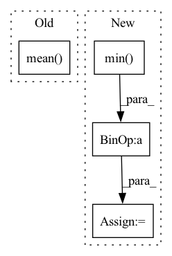

Pattern ID :16715
Before Change
if printable:
print("******************************************************")
print(target.shape, target.mean().item(), target.max().item(), target.min().item())
print(prediction.shape, prediction.mean() .item(), prediction.max().item(), prediction.min().item())
print("******************************************************")
//calculAfter Change
//mask2 = prediction > 0
// print(mask2.type(torch.float32).mean())
prediction = (prediction - prediction.min() ) / (prediction.max() - prediction.min() + 1e-8)
//prediction[mask2] = 10. / prediction[mask2]
//prediction[~mask2] = 0.
In pattern: SUPERPATTERN
Frequency: 5
Non-data size: 4
Instances Fragment ID: 55945157
Project Name: antocad/focusondepth
Commit Name: 6c33c5957c996f4015e46dd90048624e1b019574
Time: 2021-12-30
Author: antoine.cadiou@icloud.com
File Name: FOD/Loss.py
M Class Name: ScaleAndShiftInvariantLoss
N Class Name: ScaleAndShiftInvariantLoss
M Method Name: forward(3)
N Method Name: forward(4)
M Parent Class: nn.Module
N Parent Class: nn.Module
M File Name: FOD/Loss.py
N File Name: FOD/Loss.py
M Start Line: 125
M End Line: 148
N Start Line: 136
N End Line: 136
Before Change
// Compute actor loss
// Alternative: actor_loss = th.mean(log_prob - min_qf_pi)
actor_loss = (self.ent_coef * log_prob - self.critic.q1_forward(obs, action_pi)).mean()
// Optimize the actor
self.actor.optimizer.zero_grad()
actor_loss.backward()After Change
// Compute actor loss
// Alternative: actor_loss = th.mean(log_prob - qf1_pi)
qf1_pi, qf2_pi = self.critic.forward(obs, action_pi)
min_qf_pi = th.min( qf1_pi, qf2_pi)
actor_loss = (ent_coef * log_prob - min_qf_pi).mean()
// Optimize the actor
self.actor.optimizer.zero_grad() Fragment ID: 55945165
Project Name: dlr-rm/stable-baselines3
Commit Name: 0e4fc9c0acd7817c47041a0e5e3fa74936e0e69b
Time: 2019-09-25
Author: antonin.raffin@dlr.de
File Name: torchy_baselines/sac/sac.py
M Class Name: SAC
N Class Name: SAC
M Method Name: train(3)
N Method Name: train(3)
M Parent Class: BaseRLModel
N Parent Class: BaseRLModel
M File Name: torchy_baselines/sac/sac.py
N File Name: torchy_baselines/sac/sac.py
M Start Line: 169
M End Line: 207
N Start Line: 163
N End Line: 209
Before Change
if use_center_mass:
offsets = sample_points(meshes, 100000)[0].mean(0)
else:
offsets = torch.cat([v.mean( 0) [None].expand(v.shape[0], -1) for v in meshes.verts_list()], dim=0)
meshes = meshes.offset_verts_(-offsets) if inplace else meshes.offset_verts(-offsets)
if mode == "none" or mode is None:After Change
if use_center_mass:
offsets = sample_points(meshes, 100000).mean(1)
else:
offsets = 0.5 * (meshes.verts_padded().max(1)[0] + meshes.verts_padded().min( 1) [0])
// meshes.offset_vert requires tensor of size (all_V, 3), while offsets is (B, 3)
NVs = meshes.num_verts_per_mesh()
offsets = torch.cat([offset[None].expand(nv, -1) for offset, nv in zip(offsets, NVs)], dim=0) Fragment ID: 55945164
Project Name: monniert/unicorn
Commit Name: 62de9fbdc2f051d43b3544d2e83c52ef6232ac85
Time: 2022-08-17
Author: tom.monnier@hotmail.fr
File Name: src/utils/mesh.py
M Class Name: AnonimousClass
N Class Name: AnonimousClass
M Method Name: normalize(5)
N Method Name: normalize(5)
M Parent Class:
N Parent Class:
M File Name: src/utils/mesh.py
N File Name: src/utils/mesh.py
M Start Line: 18
M End Line: 35
N Start Line: 21
N End Line: 40
Before Change
// Normalize returns
// returns = (returns - returns.mean()) / (returns.std() + 1e-8)
returns = (returns - returns.mean() )
policy_loss = -(returns * log_prob).mean()
After Change
with th.no_grad():
current_q1, current_q2 = self.critic(obs, action)
// Alternatively use the q value
returns = (returns - th.min( current_q1, current_q2) )
policy_loss = -(returns * log_prob).mean()
Fragment ID: 55945163
Project Name: dlr-rm/stable-baselines3
Commit Name: da325a0ba720c744b5fc61fd29df78b72e01f10a
Time: 2019-11-13
Author: antonin.raffin@dlr.de
File Name: torchy_baselines/td3/td3.py
M Class Name: TD3
N Class Name: TD3
M Method Name: train_sde(1)
N Method Name: train_sde(1)
M Parent Class: BaseRLModel
N Parent Class: BaseRLModel
M File Name: torchy_baselines/td3/td3.py
N File Name: torchy_baselines/td3/td3.py
M Start Line: 209
M End Line: 209
N Start Line: 210
N End Line: 229
Before Change
celoc = np.cumsum(eloc, axis=0).T
celoc /= np.arange(1, nstep + 1)
var_decor = np.sqrt(np.var(np.mean( celoc, axis=1) ))
var = np.sqrt(np.var(celoc, axis=1) / (nstep - 1))
if walkers is not None:After Change
elif walkers == "mean":
plt.plot(eloc, "o", alpha=1 / nwalkers, c="grey")
emean = np.mean(celoc.T, axis=1)
emin = emean.min()
emax = emean.max()
delta = emax- emin
plt.plot(emean, linewidth=5)
plt.ylim(emin-0.25*delta,emax+0.25*delta)
else: Fragment ID: 55945131
Project Name: nlesc-jcer/qmctorch
Commit Name: baa4bab8e782c8a8c92ce59f49155230b4ef39f1
Time: 2023-04-13
Author: nicolas.gm.renaud@gmail.com
File Name: qmctorch/utils/plot_data.py
M Class Name: AnonimousClass
N Class Name: AnonimousClass
M Method Name: plot_walkers_traj(2)
N Method Name: plot_walkers_traj(2)
M Parent Class:
N Parent Class:
M File Name: qmctorch/utils/plot_data.py
N File Name: qmctorch/utils/plot_data.py
M Start Line: 77
M End Line: 97
N Start Line: 87
N End Line: 96